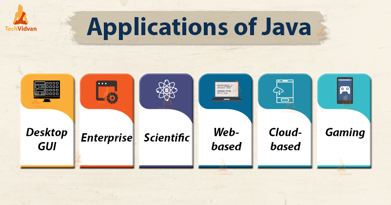
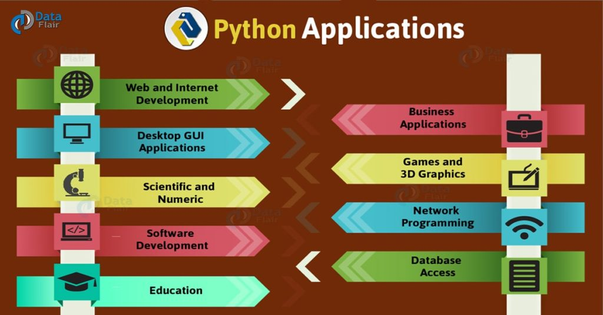

The first application that I should discuss is Mobile Device Programming There’s an app for nearly everything you'll consider lately. Many of these apps for iOS or Android are developed by individuals with an ingenious imagination and a knowledge of programming. There are several languages that stand out for mobile application development: HTML/HTML5 – HTML5 builds on the strength of HTML to support multiple browsers, screen sizes, and handling of multiple data types. Swift – Swift is gaining ground and recognition among iOS developers. Integration with Objective-C is merely one point. it's taking the lead in working with Apple APIs and eliminating the safety vulnerabilities potentially found in Objective-C apps. Big plus – businesses are on the lookout for knowledgeable Swift developers. C++ – this language has been around before mobile apps were even thought of. It are often wont to develop robust apps for both Android and Windows mobile platforms. C# – if you would like to specialise in the Windows smartphone app market, C# takes the lead where iOS utilizes Objective-C. Java – Java has been the portability leader for many years, running on mainframes, desktops, and every one kinds of mobile devices. Java is an object-oriented language which will be run during a browser window, or maybe independently without a browser. Granted, Java isn't adaptable to the iOS architecture, but Java programs are often run on multiple platforms. The Second application Social media programming languages Are you focused on becoming subsequent successful entrepreneur to create a huge social media presence? There are several sorts of programming languages behind the scenes of internet sites like Facebook: PHP handles tons of front actions, as JavaScript plays a serious role in working together with your browser. Behind the scenes, a spread of functions managed by multiple languages - C, C ++, Java and Python contribute to the Facebook experience also. IPhone and iOS users are served by Objective-C developers.
 